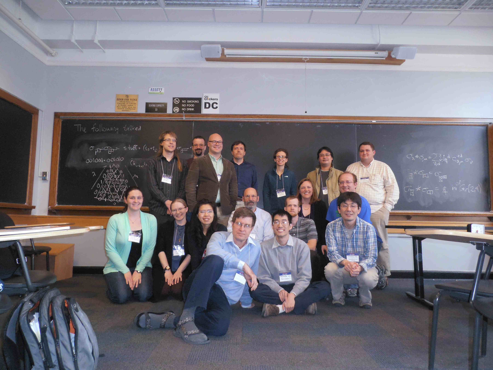

Special Session on
Combinatorial and Computational
Commutative Algebra and Algebraic Geometry
April 13-14, 2013
Boulder, CO
AMS web page for meeting

Back (L-R): Alex Fink, Tyrell McAllister, Luke Oeding, Greg Smith,
Jenna Rajchgot, Tai Ha Huy, Ben Wyser
Mid: Anna Bertiger, Kaisa Taipale, Chayapa Darayon, Jim Wolper,
Trevor McGuire, Elizabeth Beazley, Zach Teitler
Front: Brian Harbourne, Alex Woo, Hirotachi Abo